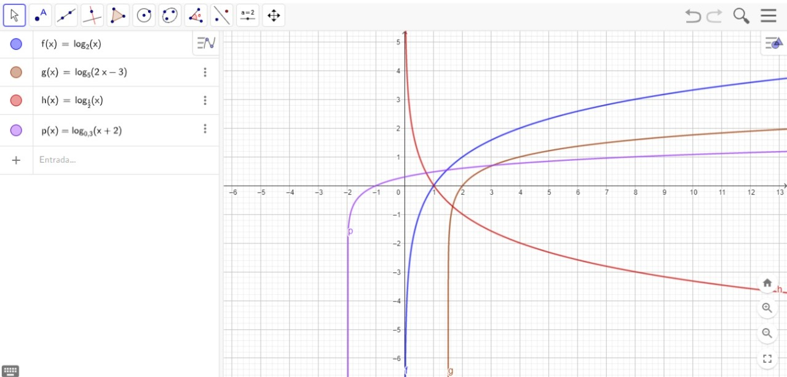
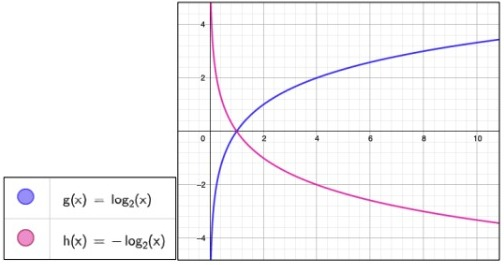

A função logarítmica é inversa a função exponencial.
Toda vez que você ver um f(x) = logb X, é uma função logarítmica.
A partir dessa função conseguimos construir gráficos, mas podemos
usar alguns passos para construir um bom gráfico, primeiro analisamos
o crescimento ou o decrescimento, depois determinamos o conjunto
domínio, encontramos a interseção com os eixos e por fim encontramos
alguns pontos do gráfico.
Para descobrirmos se é crescente ou decrescente, precisamos analisar
duas coisas, para ser crescente o b deve ser maior que um (b > 1) e
para ser decrescente o b precisa ser maior que zero, porém, menor
que um (0 < b < 1)

Mas existe outro elemento que também pode influenciar, o sinal à frente do
log, se botarmos um sinal positivo, no caso sem sinal, ele cresce, e se
botarmos sinal negativo, ele decresce.

Para sabermos o domínio, devemos ter em mente que ele deve ser um conjunto
de números reais positivos e não nulos.